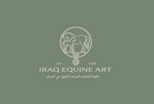
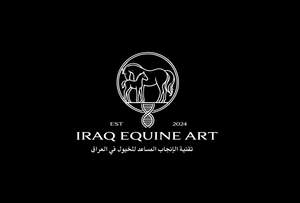
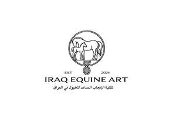

Trade Mark Journal No.2025/015 11 April 2025
UK00004177922 23 March 2025 (5,9,31,39,41,42,44)
Mark 1

Mark 2

Mark 3

- Class 5
- Semen for artificial insemination; Animal semen for artificial insemination; Insemination (Semen for artificial -); Animal semen for artificial insemination; Insemination (Semen for artificial -); Semen for artificial insemination; Animal sperm.
- Class 9
- Cell culture apparatus for laboratory use; Centrifuge separators for laboratory use; Centrifuges for laboratory use; Centrifuges used as laboratory apparatus; Laboratory apparatus and instruments; Laboratory centrifuges; Laboratory storage tubes.
- Class 31
- Live horses; Live animals, organisms for breeding.
- Class 39
- Distribution [transport] of frozen semen; Frozen storage facilities (Provision of -); Distribution [transport] of frozen semen; Provision of frozen storage facilities.
- Class 41
- Horse riding facilities (Provision of -); Horse shows (Organising -); Horse training; Organisation of horse shows; Horses (Training of -); Training (Animal -); Training (Practical -) [demonstration]; Training and education services; Training and further training consultancy; Training and instruction; Training animals for others; Training consultancy; Training courses; Training courses (Provision of -); Training facilities (Provision of -); Training for handling scientific instruments and apparatus for research in laboratories; Training of animals; Training services; Animal exhibitions and training of animals; Animal training; Arranging and conducting of training courses; Arranging and conducting of training seminars; Arranging and conducting of workshops [training]; Arranging of conventions for training purposes; Arranging of exhibitions for training purposes; Arranging of presentations for training purposes; Arranging of seminars relating to training; Arranging of training courses; Conducting training seminars; Courses (Training -) relating to science; Education, teaching and training; Educational and training services; Horse training; Horses (Training of -); Organisation of training; Organisation of training courses; Providing of training; Providing training; Provision of training; Provision of training courses; Training; Services for animal training. .
- Class 42
- Animal semen testing services for research purposes; Research of livestock breeding; Analytical laboratory services; Chemical research laboratory services; Laboratory (Scientific -) services; Laboratory analysis; Laboratory research; Laboratory services; Laboratory services for agricultural research; Laboratory testing; Laboratory testing services; Research laboratory services.
- Class 44
- Semen extraction (Animal -); Breeding of thoroughbred horses; Horse breeding and stud services; Horse breeding services; Horse farms; Horse stud services; Stud services for horses; Breeding and stud services; Breeding of animals; Breeding of thoroughbred horses; Advice relating to the breeding of animals; Animal breeding; Horse breeding and stud services; Horse breeding services; Providing information relating to animal breeding; Artificial insemination; Artificial insemination of animals; Artificial insemination services; Artificial insemination services for animals; Animals (Artificial insemination of -); Laboratory analysis services relating to the treatment of animals; Breeding and stud services; Horse breeding and stud services; Horse stud services; Stud services; Stud services (Animal -); Stud services for horses; Sperm-bank services; Services of a sperm bank.
lalo sangawi